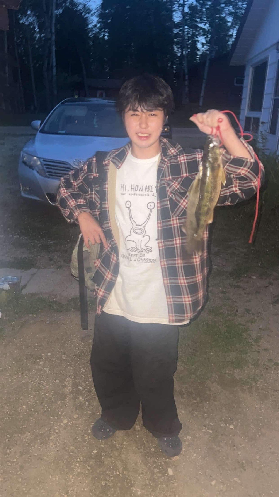

前田剛
所属: 明石工業高等専門学校 在学中
好きな技術: 自動制御
趣味: ベース、ギター、音楽
Works
開発したプロジェクトや成果物は、以下のGitHubリポジトリで公開しています。
Skills
ロボット工学 (C++)
最も情熱を注いでいる分野で、3年間の開発経験があります。
C++を主要言語とし、以下の開発に注力してきました。
- ロボットアームや移動ロボットの精密な動作制御
- LiDARセンサーとROS (Robot Operating System) を組み合わせた自律走行・自動制御システムの構築
Pythonによるプロセス自動化
Pythonを用いた作業効率化、自動化に関心が高く、実践経験があります。
画像認識ライブラリやGUI操作ライブラリを活用し、特定のアプリケーション操作を自動化するスクリプトを作成し、定型作業の効率化を実現しました。
Careers
生誕
2006/04/20
堺市立中百舌鳥中学校
2019/04 - 2022/03
明石工業高等専門学校
2022/04 - now
Certifications
実用英語技能検定 準1級
2022
TOEIC Listening & Reading Test 815点
2024